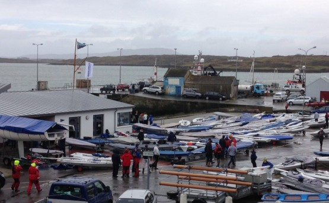

|  |
| Baltimore Castle Address: 2 Village Moorings, Baltimore, Co. Cork. | Baltimore Sailing Club Address: 2 Village Moorings, Baltimore, Co. Cork. (028) 20426 |
| Baltimore Beacon Address: Baltimore, Harboursmouth, Co. Cork. | Loughine,Baltimore Baltimore, Ballylinchy, Co. Cork. |